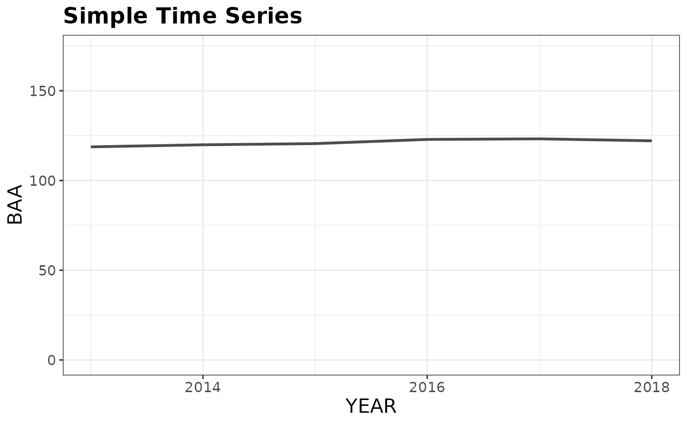
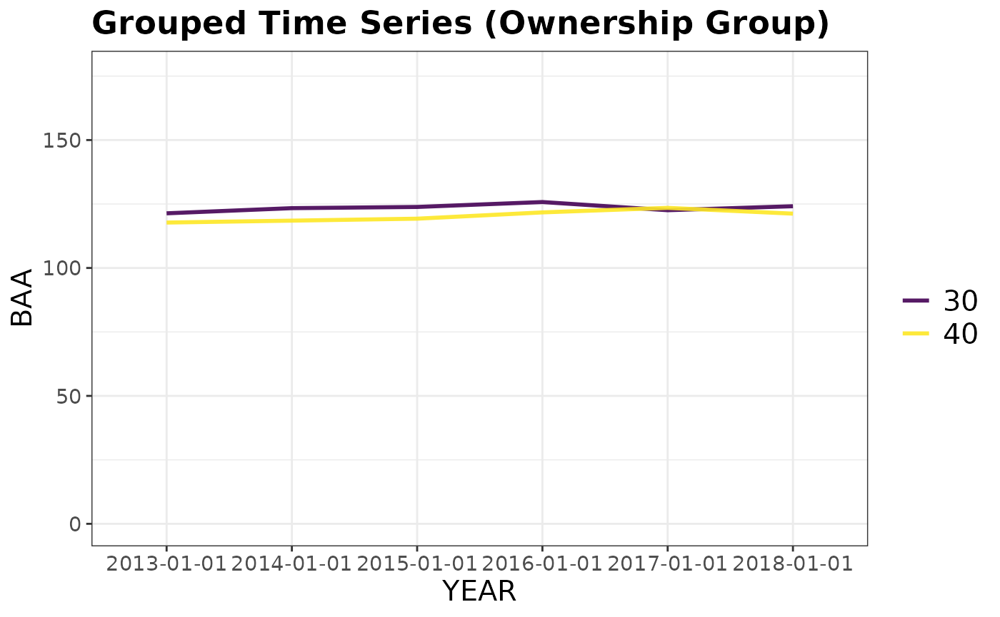
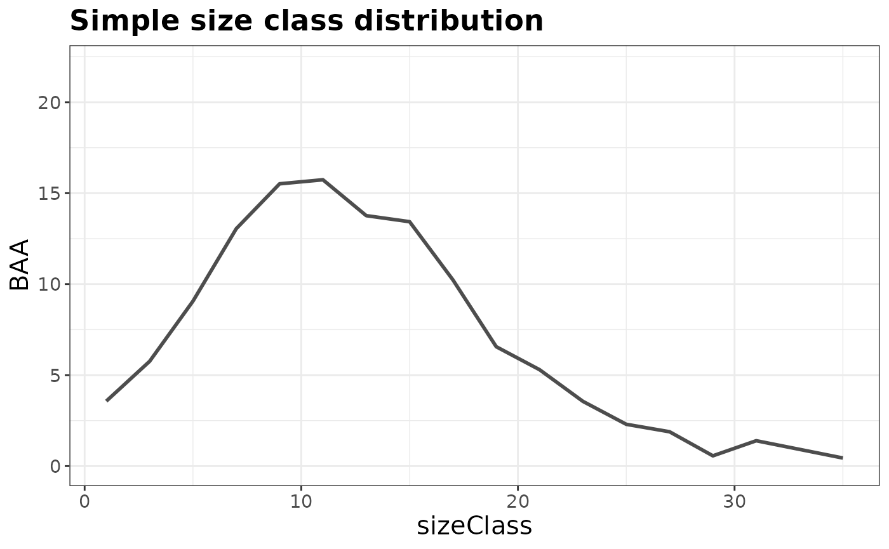
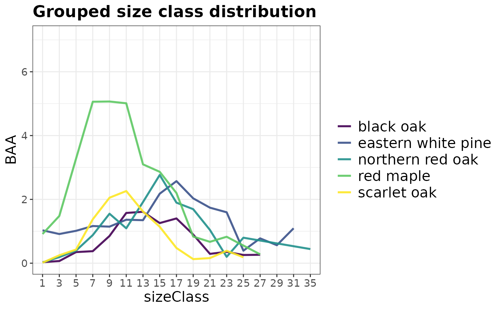

Estimating Forest Attributes
Hunter Stanke, Jeffrey W. Doser
2019 (last updated February 5, 2025)
Source:vignettes/basicEstimation.Rmd
basicEstimation.RmdNow that you have loaded your FIA data into R, it’s time to put it to
work. Let’s explore the basic functionality of rFIA with
tpa(), a function to compute tree abundance estimates (TPA,
BAA, & relative abundance (%)) from FIA data, and
fiaRI, a subset of the FIA Database for Rhode Island
including all inventories from 2013-2018.
The two example datasets used below are included with
rFIA. You can copy and paste the code below directly into R
to follow along without having to download any data!
Spatial and temporal queries
Are you only interested in producing estimates for a specific
inventory year or within a portion of your state? clipFIA()
allows you to easily query (subset) your FIA.Database
object so you only use the data you need. This will conserve RAM on your
machine and speed processing time.
Most recent subsets
To subset only the data needed to produce estimates for the most
recent inventory year (2017 in our case), users can simply pass their
FIA.Database object to clipFIA(), or more
explicitly specify mostRecent = TRUE in the call:
Spatial subsets
To subset the data required to produce estimates within a
user-defined areal region (should be contained within the spatial extent
of the FIA.Database object), simply pass a spatial polygon
object (from sp or sf packages) to the
mask argument of clipFIA. While
sp polygon objects continue to be supported, we highly
encourage the use of sf objects given that sp
is slowly being depracated in favor of sf. In our example
below, the spatial subset does little to reduce the size of our
FIA.Database object, although the effect is likely to be
much more substantial if applied to a larger state or region.
Basic population estimates
To produce tree abundance estimates and associated sampling errors
for the state of Rhode Island, simply hand your
FIA.Database object to the db argument of
tpa():
# TPA & BAA for the most recent inventory year
tpaRI_MR <- tpa(riMR)
# All inventory years available (i.e., returns a time series)
tpaRI <- tpa(fiaRI)If you would like to return estimates of population totals (e.g.,
total trees) along with ratio estimates (e.g., mean trees/acre), specify
totals = TRUE in the call to tpa(). All
estimation functions in rFIA by default return the sampling
error (i.e., standard deviation / mean * 100) as a measure of
uncertainty in the population estimates. Alternatively, you can specify
variance = TRUE to return the variance instead of the
sampling error.
Basic plot-level estimates
To return the same estimates at the plot level (e.g., mean TPA &
BAA for each plot), specify byPlot = TRUE. For tree-level
estimates, specify the argument treeList = TRUE, which will
return a tree list. The tree list can easily be used with the
customPSE() function to generate population estimates for
custom variables.
Grouping by species and size class
What if I want to group estimates by species? How about by size
class? Easy! Just specify bySpecies and/ or
bySizeClass as TRUE in the call to
tpa. By default, estimates are returned within 2 inch size
classes, but you can make your own size classes using
makeClasses()!
Grouping by other variables
To group estimates by a variable defined in the FIA Database (other
than species or size class), pass the variable name to the
grpBy argument of tpa(). You can find
definitions of all variables in the FIA Database in the the FIA
User Guide. Variables of interest will most likely be contained in
the condition (COND), plot (PLOT), or tree (TREE) tables.
# grpBy specifies what to group estimates by (just like species and size class above)
# NOTICE the variable names passed to grpBy are NOT quoted
# Ownership Group
tpaRI_own <- tpa(riMR, grpBy = OWNGRPCD)
# Ownership Group (for all available inventories)
tpaRI_ownAll <- tpa(fiaRI, grpBy = OWNGRPCD)
# Site Productivity Class
tpaRI_spc <- tpa(riMR, grpBy = SITECLCD)
# Forest Type
tpaRI_ft <- tpa(riMR, grpBy = FORTYPCD)
# Combining multiple grouping variables: Site Productivity within Forest Types
tpaRI_ftspc <- tpa(riMR, grpBy = c(FORTYPCD, SITECLCD))Variable names passed to grpBy should NOT be quoted.
Multiple grouping variables should be combined with c(),
and grouping will occur hierarchically. For example, to produce separate
estimates for each ownership group within ecoregion subsections, specify
c(ECOSUBCD, OWNGRPCD).
Unique areas or trees of interest
Do you want estimates for a specific type of tree (e.g., greater than
12-inches DBH and in a canopy dominant or subdominant position) in a
specific area (e.g., growing on mesic sites)? Each of these
specifications are described in the FIA Database, and all
rFIA estimator functions can leverage these data to easily
implement complex queries!
For conditions related to trees of interest (e.g., diameter, height,
crown class, etc.) pass a logical statement to treeDomain.
For conditions related to area (e.g., ecoregions, counties, forest
types, etc.), pass a logical statement to areaDomain.
These statements should NOT be quoted.
# Estimate abundance of trees greater than 12-inches DBH in a dominant
# or subdominant canopy position growing on mesic sites
tpaRI_domain <- tpa(riMR,
treeDomain = DIA > 12 & CCLCD %in% c(1,2),
areaDomain = PHYSCLCD %in% 20:29)In the code above, DIA describes the DBH of stems, CCLCD their canopy position, and PHYSCLCD the physiographic class upon which the class occurs. You can find definitions of all variables in the FIA User Guide. Variables of interest will most likely be contained in the condition (COND), plot (PLOT), or tree (TREE) tables.
Visualization
Now that we have produced some estimates, we should translate them
into plots so we can easily see the status and trends in our selected
forest attributes. Using plotFIA(), we can easily produce
(1) simple or grouped time series plots, (2) simple or grouped plots
with a user defined x-axis (e.g., size class), and (3) spatial
chloropleth maps (see Incorporating
Spatial Data).
Time Series Plots
By default, plotFIA() will produce time series plots if
you produced estimates for more than one reporting year and do not
specify a non-temporal x-axis. To produce a grouped time series, simply
hand the grouping variables to the grp argument of
plotFIA() (should correspond with the grpBy
argument of estimating function).
# Using our estimates from above (all inventory years in RI)
plotFIA(tpaRI, y = BAA, plot.title = 'Simple Time Series')
# Grouped time series by ownership class
plotFIA(tpaRI_ownAll, y = BAA, grp = OWNGRPCD,
plot.title = 'Grouped Time Series (Ownership Group)')
Non-temporal plots
To define your own x-axis, simply specify the variable you would like
to use in the x argument of the plotFIA()
call. This is great for plotting things like size-class distributions.
Since these plots do not have time as an axis, they are best suited for
plotting estimates from a single point in time (e.g., a most recent
subset).
# BAA by size class for most recent inventory
plotFIA(tpaRI_sizeClass, y = BAA, x = sizeClass, plot.title = 'Simple size class distribution')
# Size class distribution for the five most common species in the
# most recent inventory of RI
plotFIA(tpaRI_spsc, y = BAA, grp = COMMON_NAME, x = sizeClass,
n.max = 5, plot.title = 'Grouped size class distribution')
You can specify n.max to any grouped call to
plotFIA to only display the top or bottom n
groups in your plot. In the call above we specified
n.max = 5, resulting in the species with the highest
average basal area per acre values being plotted. To only plot the
bottom five, specify n.max = -5.
Variance vs Sampling Error
FIA’s flagship online estimation tool, EVALIDator, reports estimates of uncertainty as “% sampling error” (SE). While the definition is a bit elusive, this measure is simply the % coefficient of variation, or the sample standard deviation divided by the sample mean multiplied by 100. FIA opts to report SE as opposed to sample variance because SE provides an easy, “standardized” way to compare uncertainty across estimates with very different absolute values (i.e., how large is the “spread” relative to the mean?). However, SE has its downsides. First, confidence intervals cannot be derived directly from SE. Second, the “standardized” nature of the SE breaks down as the mean approaches zero (SE approaches infinity in this case), making it particularly uninformative for change estimates that tend near zero.
In rFIA we allow users to return estimates of
uncertainty in terms of SE or sample variance using the
variance argument (where variance=TRUE returns
sample variance). Along with the sample size, sample variance can be
used to produce proper confidence intervals for totals and ratios:
# TPA with % sampling error (SE)
tpaSE <- tpa(riMR, variance = FALSE)
tpaSE## # A tibble: 1 × 8
## YEAR TPA BAA TPA_SE BAA_SE nPlots_TREE nPlots_AREA N
## <dbl> <dbl> <dbl> <dbl> <dbl> <int> <int> <int>
## 1 2018 427. 122. 6.63 3.06 126 127 199
# TPA with % sampling error (SE)
tpaVAR <- tpa(riMR, variance = TRUE)
tpaVAR## # A tibble: 1 × 8
## YEAR TPA BAA TPA_VAR BAA_VAR nPlots_TREE nPlots_AREA N
## <dbl> <dbl> <dbl> <dbl> <dbl> <int> <int> <int>
## 1 2018 427. 122. 801. 13.9 126 127 199
# Estimate 95% confidence interval around 2018 TPA
halfInt <- qt(0.975, tpaVAR$N - 1) * sqrt(tpaVAR$TPA_VAR)
# Lower
tpaVAR$TPA - halfInt## [1] 370.9086
# Upper
tpaVAR$TPA + halfInt## [1] 482.5153Other rFIA functions
Fortunately, all of the rFIA estimator functions are
structured in the same way as tpa(). Therefore you can use
essentially the same argument calls we’ve used above to produce
estimates of other types of forest attributes! Notably, for some
rFIA functions like dwm() (estimates down
woody material volume, biomass, and carbon) it does not make sense to
include arguments like treeDomain or
bySpecies, and hence these arguments are not available. For
other functions, like area() or biomass(),
additional grouping options exist. Check out the help pages for these
functions for more details.